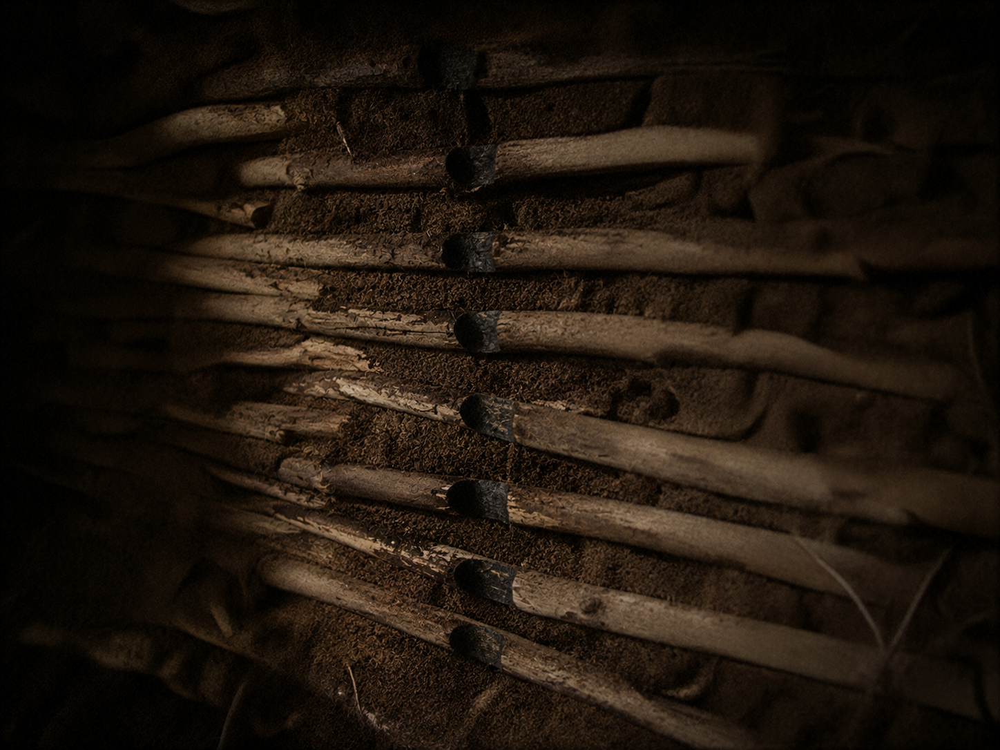

░░░░░░░░░░░░░░░░░░░░░░░░░░░░░░░░░░ · D E S C E N T · 24 / 40 · ░░░░░░░░░░░░░░░░░░░░░░░░░░░░░░░░░░

A hollow the size of a single thought. It pulled the dark in after itself. And it kept one thing burning, very low.
akoiunedrlsitncg